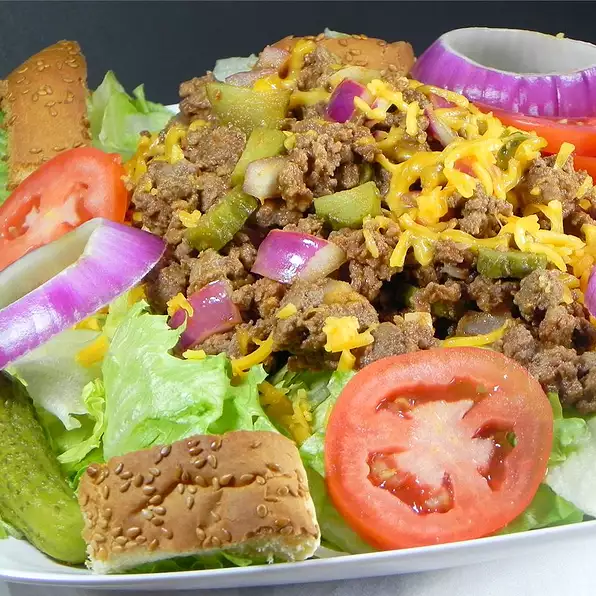

Cheeseburger Salad

Description
Just like eating a cheeseburger!
Only healthy (a little).
Ingredients
- 2 hamburger buns, split and cut into 3/4 inch strips
- ½ small red onion, chopped
- 1 pound lean ground beef
- 1 cup ketchup
- ½ cup finely chopped dill pickle
- 1 tablespoon prepared yellow mustard
- ½ small red onion, sliced
- 8 cups chopped lettuce
- 2 plum tomatoes, chopped
- 1 cup shredded Cheddar cheese
Steps
- Preheat an oven to 425 degrees F (220 degrees C)
-
Arrange the strips in a single layer on a baking sheet, and bake for 8
to 10 minutes, until the strips are lightly toasted. Set the strips
aside
-
Place the ground beef into a skillet over medium heat, and brown the
meat for about 10 to 12 minutes, breaking the beef apart as it cooks,
until the meat is well browned and no longer pink inside. Stir the
chopped onion, ketchup, dill pickle, and mustard into the beef mixture
and mix well
-
Arrange the chopped lettuce on a large serving platter, and spoon the
beef mixture over the lettuce. Top the salad with the sliced onion, plum
tomatoes, and shredded cheese, and arrange the hamburger bun croutons
around the platter
- Enjoy!